Anreise: Von Frankfurt über Nacht nach Hongkong, ein halber Tag Umsteigen im riesigen Terminal von Chek Lap Kok, dann weiter nach Cebu. „Dayon kamo sa Cebu!" – willkommen auf Cebuano, der Sprache der Visayas.
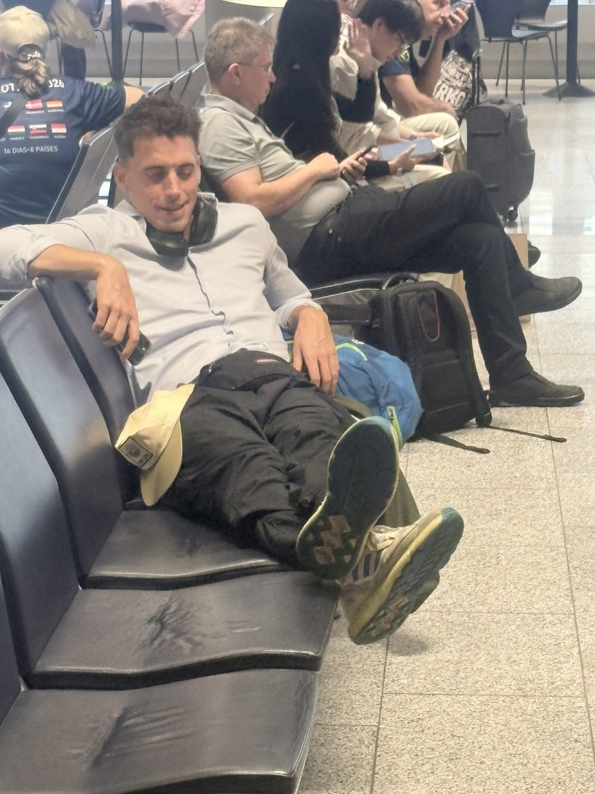
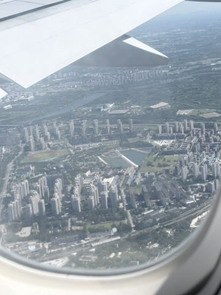
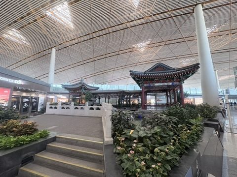
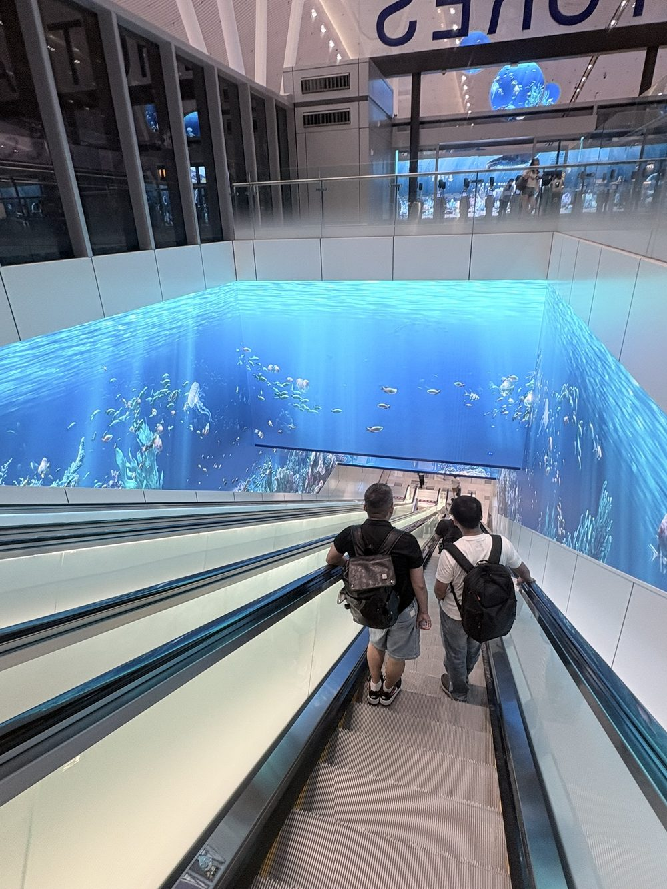
Die Südküste hinunter: Mit dem Fahrer über die Brücken nach Cebu-Stadt und dann gut drei Stunden die Südküste hinunter nach Oslob. Unterwegs: Tricycles, Motorräder mit Seitenwagen, die auf den Philippinen die Taxis ersetzen. Abends Cocktails, Kokosnuss und Lechon-Spieße an einem Grillstand am Straßenrand.
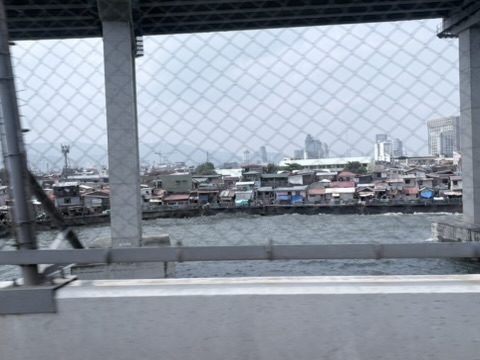
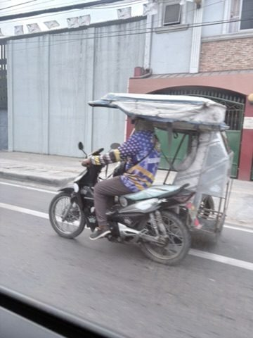
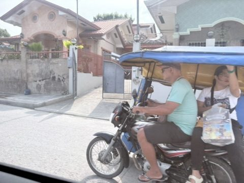
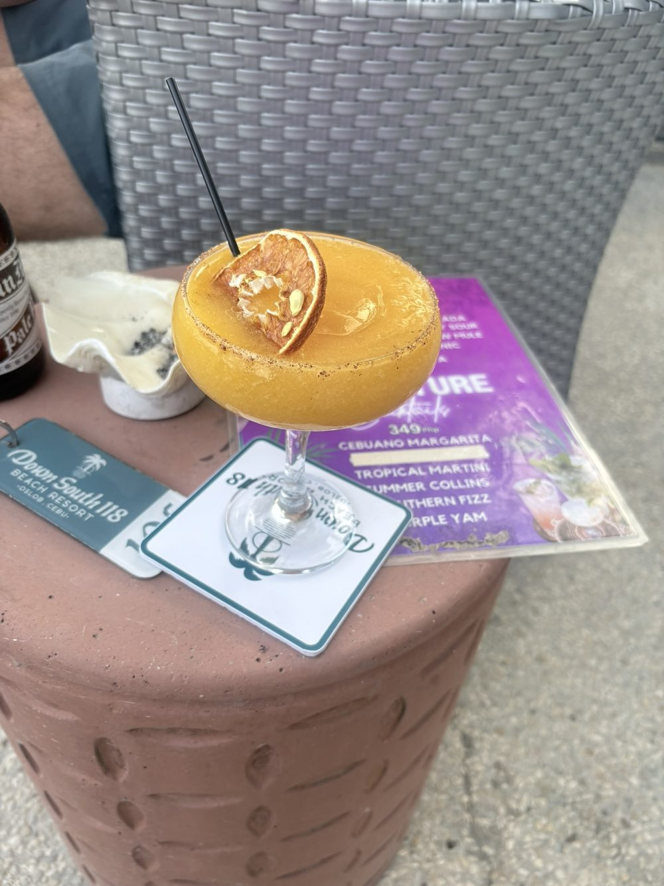
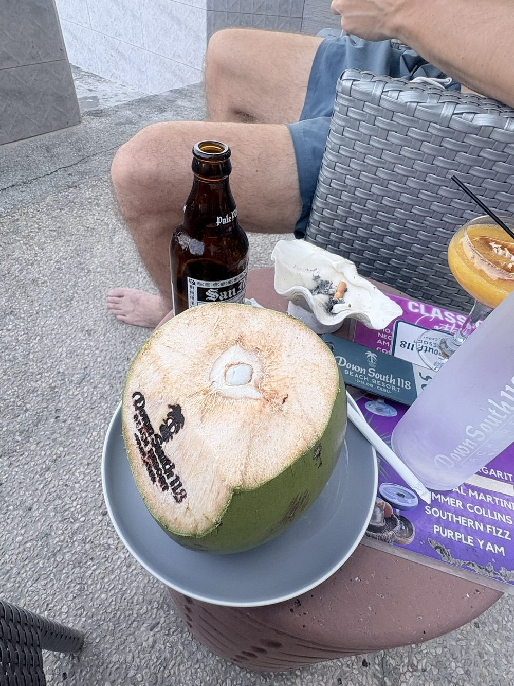
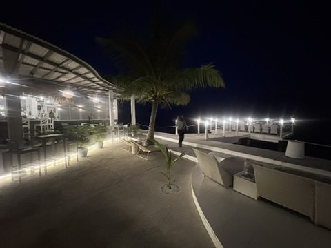
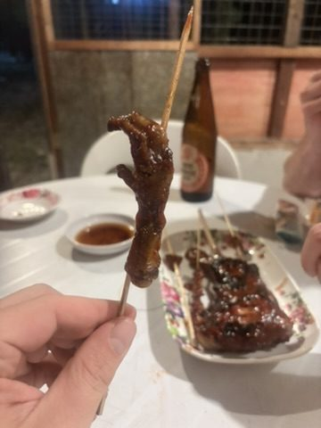
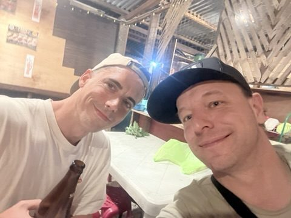
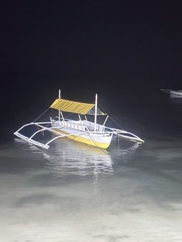